扉页
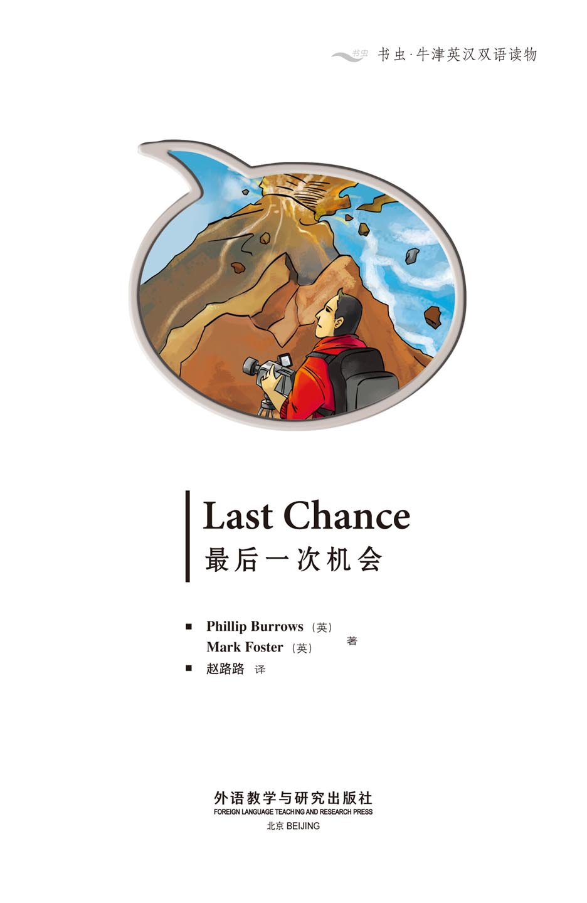
版权页
京权图字：01-2013-7803
Published by arrangement with Oxford University Press for sale in the People's Republic of China only and not for export therefrom. This edition is for sale in the mainland of China only, excluding Hong Kong SAR, Macao SAR and Taiwan.
© Oxford University Press 2008
Oxford is a registered trademark of Oxford University Press
图书在版编目（CIP）数据
最后一次机会：英汉对照／（英）伯罗斯（Burrows, P.），（英）福斯特（Foster, M.）著；赵路路译．—北京：外语教学与研究出版社，2013.11
（书虫·牛津英汉双语读物）
书名原文：Last chance
ISBN 978-7-5135-3760-5
Ⅰ．①最… Ⅱ．①伯… ②福… ③赵… Ⅲ．①英语—汉语—对照读物②短篇小说—英国—现代 Ⅳ．①H319.4：I
中国版本图书馆CIP数据核字（2013）第272355号
出版人 蔡剑峰
责任编辑 杨镇明
封面设计 蔡 颖
出版发行 外语教学与研究出版社
社 址 北京市西三环北路19号（100089）
网 址 http://www.fltrp.com
版 次 2013年12月第1版
书 号 ISBN 978-7-5135-3760-5
制售盗版必究 举报查实奖励
版权保护举报电话：（010）88817519
内容简介
内容简介
“出去找点儿新闻，”弗兰克先生对迈克说，“这是你最后一次机会。”
迈克是一名优秀的摄影师，可是他在SFX新闻部的老板弗兰克先生却不这么认为。迈克生活得很不错，他需要这份工作。他能做些什么呢？
夏威夷有一座火山正在喷发——这是发掘好新闻的良机。迈克去那里拍摄，然而火山非常危险，于是他明白了有些事情比他的工作或者他的摄像机更为重要。
这的确是他的最后一次机会……
LAST CHANCE
LAST CHANCE
'Go away and find some news,' says Mr Frank to Mike. 'This is your last chance.'
Mike is a good cameraman but his boss at SFX News, Mr Frank, doesn't think so. Mike has a nice life and he needs his job. What can he do?
In Hawaii a volcano is erupting – a good chance for a good story. Mike goes there to film the story, but it is dangerous on the volcano and he learns that some things are more important than his job, or his camera.
This really is his last chance...
目录
Last Chance
LAST CHANCE
'Come in here!' says Mike's boss. He is angry – again.
Mike is a cameraman and he works for SFX News. His boss, Mr Frank, is angry with him. It is the second time this week.
Mike walks slowly into the office. He is in big trouble.
'Close the door,' says Mr Frank. There is a video in his hand.
'This is bad,' thinks Mike. 'He doesn't like my work.'
Mr Frank looks at Mike. 'Are you a news cameraman?' he asks.
'Yes, of course,' says Mike.
'Well, this isn't news.' He throws the video at the door. 'It's... it's... I have a three-year-old son. He can do better. Go away and find some news. I want a film that hits me here.' Mr Frank puts his hand on his heart.
'And Mike...'
'Yes, Boss?'
'This is your last chance.'
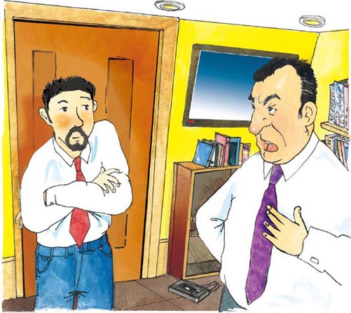
Mike walks slowly out of Mr Frank's office. His face is red.
'He can't talk to me like that,' he thinks. 'I'm a good cameraman. I'm unlucky, that's all. But I can't be angry with him because I need my job.'
Mike sits on his chair and looks out of the window. He sees an old man sitting in his garden. He feels tired. 'Am I too old for this job?' thinks Mike. 'Am I too tired?'
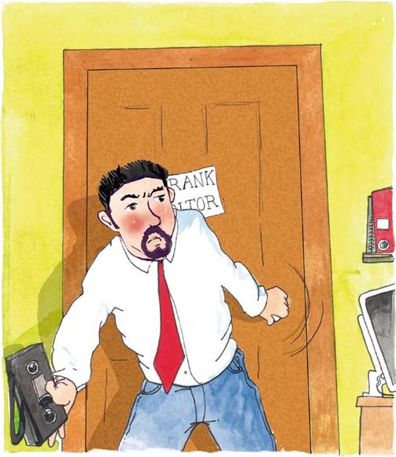
There is a newspaper on Mike's desk. He picks it up and reads it. There is a volcano in Hawaii. The volcano is erupting and people are leaving. Mike sees a photograph of the volcano. It looks dangerous. 'Hmm. Maybe...' he thinks.
Mr Frank walks past. 'Reading the newspaper?' he says. 'Remember – this is your last chance.'
Mike feels very angry but he says nothing. 'This is bad,' he thinks. 'I must go to Hawaii and make an exciting film.'
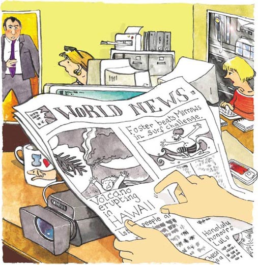
Mike gets in his car and quickly drives home. He has a nice car. It is fast and he loves it. It is also expensive. He needs to work.
Mike stops the car next to his house. He goes in the house. 'What do I need?' he thinks. He puts some clothes in a bag and picks it up.
'One more thing,' he thinks. 'My video camera.' He picks up his camera and gives it a kiss. 'We can do it, old friend,' he says.
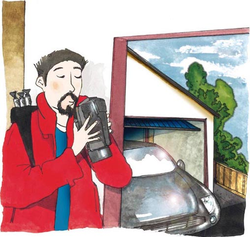
Later that day, Mike takes a plane to Hawaii. There are only seven people on the plane. He looks out of the window. 'Hawaii is beautiful!' he thinks. There are big waves on the sea. 'I would like to go surfing,' thinks Mike. 'Perhaps another time.'
But as the plane gets closer, the sky is very dark.
At the airport lots of people are running. Some people are crying. 'The volcano is erupting,' they say to Mike. 'Why are you here?'
'I'm here because I'm a news cameraman. A good news cameraman,' he tells them. He can see the volcano. It is a long way away. There is black smoke and red fire. 'Is this a good idea?' thinks Mike.
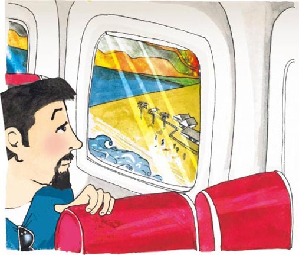
Some news people are leaving Hawaii. They are getting on a plane. Mike talks to them. A girl tells him that the volcano is very dangerous.
'I think my friend Jenny is there. She wants to make a film, too. Is she alive or dead? I don't know,' says the girl. 'You must come with us,' she says, 'You can't go to the volcano.'
'I want to leave the island,' thinks Mike. 'I don't want to die, but...'
'I can't go with you. I have work to do,' he says.
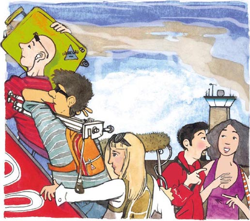
'OK,' says the girl. 'Look out for my friend Jenny. She has big blue eyes. Please tell her to leave the island.'
'OK,' says Mike. He says goodbye to the girl. He watches the plane leave. 'This really is my last chance,' he thinks.
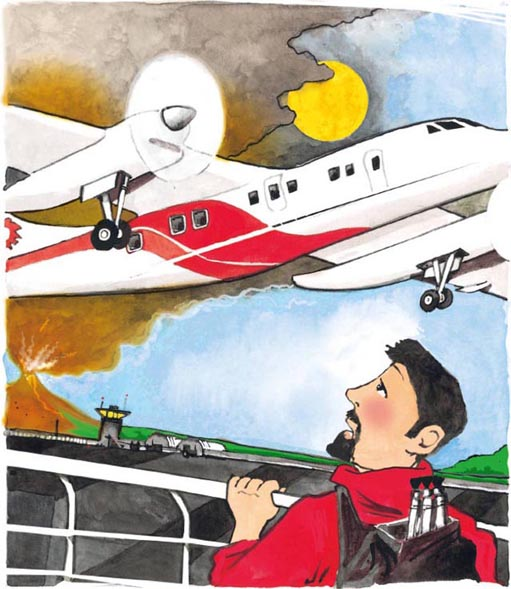
Just then the volcano makes a big noise. A dog runs quickly past. An old woman starts to cry. Mike looks at her. He wants to say something but he can't. The sun is hot but suddenly he is cold. He is afraid.
'I can't be afraid,' he says. He looks at his camera and says, 'Let's go, old friend.'
Mike walks through the town. The sky is getting darker. The red fire over the volcano is getting bigger and bigger. Mike is feeling more afraid.
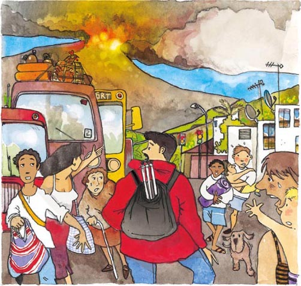
In the town Mike meets a man. The man is leaving with his family. 'How can I get to the volcano?' Mike asks.
'Cars don't go to the volcano,' says the man. 'The drivers are afraid. You must walk.'
'Is it far?' asks Mike.
'No,' says the man. 'But the fire is hot. Take lots of water with you.'
There is a television in a shop window. It is not showing pictures of the volcano. 'I am the only news person here,' Mike thinks. 'I have a chance to make the only film about the volcano. I must go.'
The road in front of him is very long. His legs feel tired but he begins to walk.
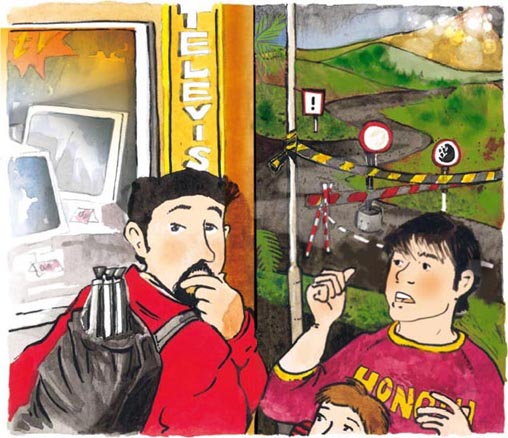
After two long hours, Mike is on the volcano. There is a lot of smoke and a lot of fire. Mike can't see any people.
'I must be quick,' he thinks. Mike films the smoke and the fire. A big rock nearly hits him but he films it. 'This film is good,' he thinks.
He is afraid but happy. 'How can Mr Frank be angry now?' Mike thinks. He is taking lots of film.
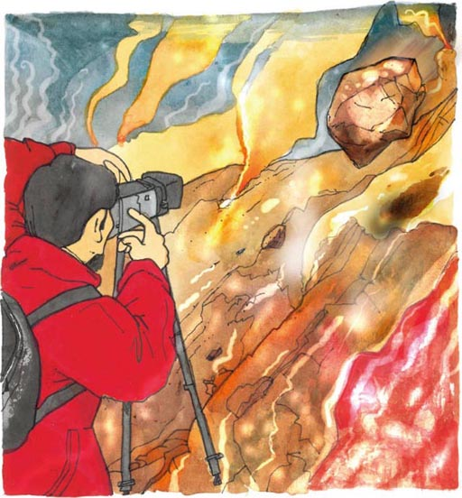
Another rock almost hits him. Mike feels hot and tired. 'It's time to go,' says Mike. 'Good job!' he says to his camera.
A bigger rock goes over his head. 'I don't like this. I must go now,' he says. Mike can smell the smoke. He can feel the fire.
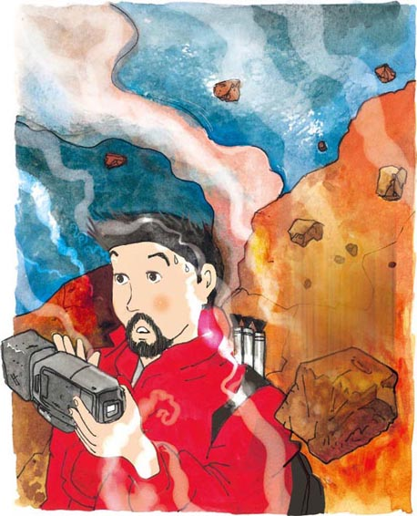
Mike puts his camera under his arm. He starts to run. Just then the volcano makes a noise. Mike runs faster. Suddenly, he hears a different noise.
'Is that a woman?' thinks Mike. 'It can't be. There is nobody here.'
He starts to run again, but then...
'Help!'
'It is somebody. They need me,' he thinks. 'Hello,' he says. 'Where are you?' Mike looks everywhere, but he can't see anybody.
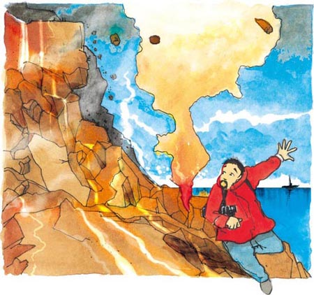
'I'm here. Please help me!'
Mike sees something behind a rock. It moves. He goes to the rock and sees a young woman there. She can't move her leg because it is under the rock.
'Oh, thank you. Thank you,' she says to Mike. She begins to cry. 'My leg. I think it's broken.'
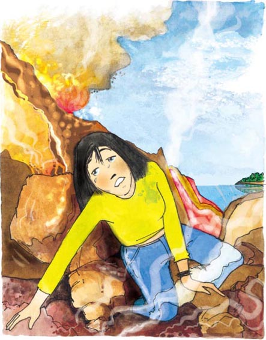
'Wait a minute,' says Mike. 'I can help.'
He pushes the rock. It is too big. There are small rocks in front. He pushes them away then pushes the big rock again. It moves a little. He pushes harder. It moves a little more.
'Aargh,' cries the woman.
Suddenly the rock moves down the volcano.
The woman's face is white. She smiles slowly.
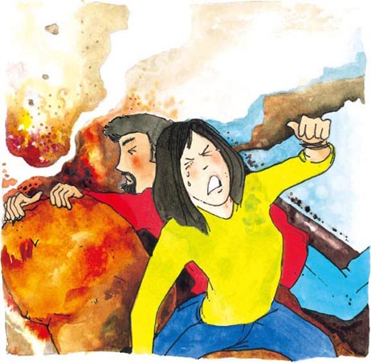
'Are you Jenny?' Mike asks.
'Yes, I am!' she says. 'How do you know?'
'It doesn't matter now. My name is Mike. I have to carry you, Jenny. But first...'
Mike has a tripod. He ties it to Jenny's leg. 'Does that feel better?' he asks.
Jenny smiles again. 'Thank you, Mike,' she says. She is very tired. 'I'm usually very careful – but not today.'
'Come on. We have to get off the volcano,' says Mike.
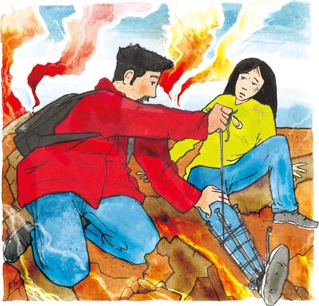
'Put your arm around me,' Mike tells Jenny. He puts down his camera. Jenny gets up slowly. Her leg is very bad.
'Take it easy,' Mike says. They start to walk very slowly.
'It's okay,' he says. 'You're okay.'
Metre by metre they move down the volcano. They are almost hit by rocks. Black smoke is in their mouths. Hot fire is close behind them. But they are alive.
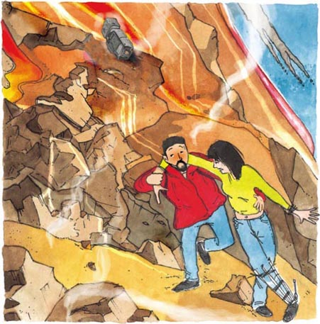
'Mike – wait,' says Jenny suddenly. 'Your camera!' She stops walking. Her face is black with smoke. Jenny's blue eyes look at Mike.
Mike looks back at Jenny. 'You're more important than my camera,' he tells her.
'But the volcano... I can wait here. You go back. It's not too late.'
Mike says nothing.
They keep walking slowly down the volcano – and away from Mike's camera.
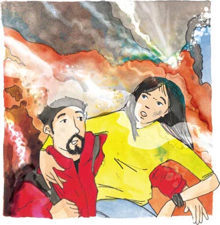
Jenny is now very tired. Her leg is badly broken. Mike stops behind a big rock.
'Do you want some water?' he asks.
Mike has some water in his bag. Jenny and Mike are both thirsty. They drink the water.
Jenny begins to go to sleep. 'This is dangerous. Jenny must stay alive,' Mike thinks. 'Don't go to sleep, Jenny. Talk to me. Where is your home? Tell me about your family. Do you like books?'
They walk and Jenny talks. When she stops talking, Mike asks another question.
They are almost off the volcano. Mike looks back. Where is his camera? Is it in the fire?
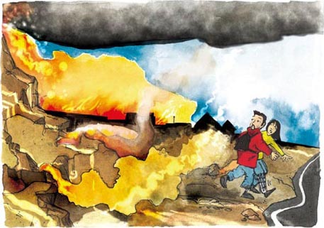
They are off the volcano. Mike sits down next to Jenny. He puts his head in his hands.
'What's the matter?' asks Jenny.
'Everything,' says Mike. 'I have no camera and no film. Now I don't have a job. There are no more chances.'
Jenny puts her arm around him. 'It's okay.'
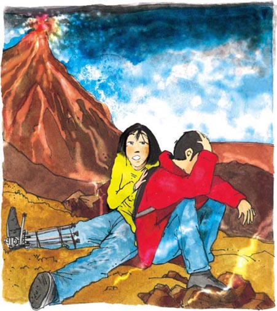
Two hours later, they walk into the town. People come out to see them.
'Are you all right?' they ask Jenny.
'I have a broken leg, but I am alive,' she says, and looks at Mike. 'Thank you, Mike.' He smiles.
'There is a helicopter waiting for you,' says a man in a suit. 'It is leaving the island. You must get on quickly.' The man helps them into the helicopter.
In the helicopter, a man says to Mike, 'Do you need anything?'
'My camera,' he says. 'But it is on the volcano. My camera is my best friend and oldest friend.' Mike closes his eyes and goes to sleep.
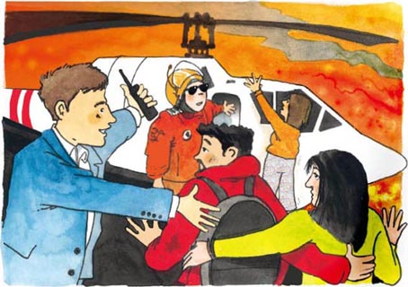
Mike is now at home. He does not want to see his boss, Mr Frank. Then one morning he hears the telephone. 'Hello?' he says.
'This is Mr Frank. You must come to work tomorrow. I need to talk to you. Goodbye.'
The next day, Mike goes to work. His friends are happy to see him. 'Well done, Mike,' they say.
'Thanks,' says Mike. He is happy to see his friends, but he is afraid of Mr Frank.
His boss sees him. 'You, get in here.'
'This is it,' thinks Mike.
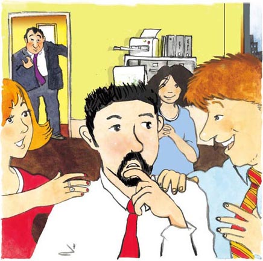
In the office Mr Frank looks at Mike. He has something in his hands. 'Do you remember the people in the helicopter?' he asks.
'Yes,' says Mike.
'They remember you. I think you need to thank them.' He moves his hands. There is Mike's camera.
'My camera!' says Mike.
'The camera is broken,' says Mr Frank. 'But we have the film and it's very good.' He smiles.
'My old friend,' says Mike to his camera. He gives it a kiss.
'Let's watch your video,' Mr Frank says.

They watch the film on the TV. They can see Mike and Jenny. Mike moves the big rock. He helps Jenny to walk. Big rocks are falling out of the sky. The volcano makes a noise. The fire is red and the smoke is black. It is very exciting.
'Next time, remember to turn it off. Or maybe not!' says Mr Frank. 'This video hits me... right here!'
Then Mr Frank says, 'Oh, and Mike – we have a new news person.'
Jenny comes into the room. She isn't black with smoke now. She smiles at Mike. 'She's beautiful,' Mike thinks. 'She hits me... right here!'
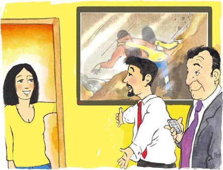
GLOSSARY 词汇表
GLOSSARY 词汇表
around prep. all the way round 环绕，在…周围
boss n. a person who tells workers what to do 老板，上司
broken adj. in pieces or not working 断裂的；损坏的
camera n. a thing you use for taking photographs or moving pictures 照相机；摄像机
cameraman n. a person who films 摄影师
carry v. to take 背，送
chance n. when something can happen 机会
dangerous adj. that can kill you 危险的
erupt v. to throw out gas, hot rocks, and liquid rocks 喷发，爆发
exciting adj. making you feel very happy 令人兴奋的，刺激的，惊心动魄的
film v. to use cameras to make a movie 拍摄（影片），把…拍成电影；n. moving pictures that tell a story 影片，电影
idea n. something that you think 主意，想法
job n. work 工作；职位
kiss v. to touch lovingly with your mouth 吻，亲吻
surfing n. standing or lying on a flat board when the sea carries you back to the beach 冲浪（运动）
throw v. to make something move from your hand through the air 扔，投，拋
trouble n. problems 麻烦，问题
unlucky adj. when something bad happens to you 不幸的，不走运的
volcano n. a mountain with a hole in the top where fire, gas, and hot liquid rock sometimes come out 火山
ACTIVITIES 阅读练习
Last Chance
ACTIVITIES
阅读练习
ACTIVITIES
Before Reading
1 Look at the front cover of the book. Answer these questions.
1) The main character in the story is...
a □ a gardener
b □ a student
c □ a cameraman
2) The story happens...
a □ in an office
b □ in an airport
c □ on a volcano
2 Read the story introduction and back cover of the book. Answer these questions.
1) How will the story make you feel?
a □ Happy
b □ Sad
c □ Excited
2) Who has one 'last chance'?
a □ Mr Frank
b □ Mike
c □ Jenny
ACTIVITIES
While Reading
1 Now answer these questions.
1) Where is the volcano?
2) What is the name of Mike's boss?
3) What is Mike's job?
4) What does Mike see through the window?
5) Mike's boss has a son. How old is he?
6) Is Mike happy?
2 Now make these sentences correct.
1) There are only three people on the plane.
2) There are big birds on the sea.
3) A girl tells him that the volcano is very beautiful.
4) Her friend has big green eyes.
3 Put these sentences in the correct order. Number them 1-4.
a □ Mike starts to run away.
b □ Mike hears someone shout, 'Help!'
c □ A man says Mike must walk to the volcano.
d □ A big rock nearly hits Mike.
4 Now answer these questions.
Who...
1) ... says, 'Take it easy.'?
2) ... has a white face?
What ...
3) ... is on Jenny's leg?
4) ... does Mike tie to Jenny's leg?
5 Now answer these questions.
1) Why is Mike unhappy?
a □ Because he has a bad leg.
b □ Because he doesn't want to leave the volcano.
c □ Because he doesn't have his camera.
2) What does Mike have in his bag?
a □ A sandwich.
b □ A menu.
c □ Some water.
6 Before you read the end of the story, what do you think happens?
1) Jenny finds Mike's camera.
Yes □ No □
2) Mr Frank is pleased with Mike.
Yes □ No □
3) Mike loses his job.
Yes □ No □
4) Mike kisses his camera.
Yes □ No □
5) Mike kisses Jenny.
Yes □ No □
ACTIVITIES
After Reading
1 What do you know about Mike? Write about him using these words:
job / cameraman / good
boss / nasty / afraid
drive / car / fast
best friend / camera
like surfing
2 Make four complete sentences. Use these words:
and / but / when / because
1) Mike loses his camera ...
2) Mike pushes the rock ...
3) Mr Frank is angry ...
4) The volcano erupts ...
a) ... black smoke comes out of the top.
b) ... he helps Jenny on the volcano.
c) ... it is too big to move.
d) ... Mike does not make good films.
3 Who says these words? Who do they say it to?
1) 'This is your last chance.'
2) 'We can do it, old friend.'
3) 'Look out for my friend Jenny.'
4) 'Take lots of water with you.'
5) 'I'm here. Please help me!'
6) 'Don't go to sleep, Jenny.'
4 Complete this summary of the story. Use these words:
boss / like / job / Jenny / volcano / rock
helicopter / hears / camera / chance
Mike is in trouble because his _________ does not _________ his work. Mr Frank gives Mike one last _________.
He goes to Hawaii to film a _________. He _________ a woman shout 'Help!' when he is filming. The woman is called _________. Her leg is under a _________. Mike moves the rock and carries her down the volcano, but he loses his _________. He thinks he will lose his job too. But a _________ finds his camera and the film is very good. Mike's boss is very happy. Mike is also happy when Jenny gets a _________ working with him.
TRANSLATION 参考译文
TRANSLATION 参考译文
Last Chance
最后一次机会
“进来！”迈克的老板说。他又一次生气了。
迈克是一名摄影师，在SFX新闻部工作。他的老板弗兰克先生在生他的气。这是本周的第二次。
迈克慢慢地走进办公室。他有大麻烦了。
“关上门。”弗兰克先生说。他手里拿着一盘录像带。
“糟糕，”迈克心想，“他不喜欢我拍的东西。”
弗兰克先生看着迈克。“你是新闻摄影师吗？”他问道。
“是，当然是。”迈克说。
“但这不是新闻。”他把录像带朝门口扔去。“这东西……这东西……我有个3岁的儿子，他都能做得比你好。去外面找点儿新闻吧。我想要一个能打动我这里的片子。”弗兰克先生把手放在自己的心口处。
“还有，迈克……”
“什么，老板？”
“这是你最后一次机会。”
迈克慢慢地走出弗兰克先生的办公室。他满脸通红。
“他不能那样跟我说话，”迈克想，“我是个很好的摄影师，只是运气不好而已。但是我不能生他的气，因为我需要这份工作。”
迈克坐在椅子上往窗外望去。他看见一个老人坐在自家的花园里。他感觉很疲惫。“是我太老了，不适合做这份工作了吗？”迈克想，“我是不是太累了？”
迈克的桌上有一份报纸，他拿起来看。夏威夷有座火山在喷发，人们在撤离。迈克看到一张火山的照片，火山看上去很危险。“嗯，也许……”他想。
弗兰克先生从门口走过。“在看报？”他说，“记住，这是你最后一次机会。”
迈克非常生气，但他什么也没说。“情况不妙，”他想，“我必须去一趟夏威夷，拍个刺激的片子。”
迈克上了自己的车并迅速开车回家。他的车不错，车速很快，他非常喜欢。养车也很费钱，所以他需要工作。
迈克把车停在家门旁边，走进屋子。“我需要带些什么呢？”他想。他把几件衣服放进一个包里，拎了起来。
“还有个东西，”他想，“我的摄像机。”他拿起摄像机亲吻了一下。“我们能行，老伙计。”他说。
当天晚些时候，迈克乘坐飞机前往夏威夷。飞机上只有7个人。他望向窗外。“夏威夷真美！”他想。海面上波涛汹涌。“我想去冲浪，”他想，“或许下次吧。”
然而当飞机接近夏威夷的时候，天空非常阴暗。
机场上许多人在奔跑。有些人在哭。“火山正在喷发，”他们对迈克说，“你为什么来这里呢？”
“我来这儿是因为我是一名新闻摄影师，一名优秀的新闻摄影师。”他告诉他们。他能看见火山。火山离得很远，那里有黑色的烟和红色的火。“这是个好主意吗？”迈克想。
一些记者正在撤离夏威夷。他们登机时，迈克向他们打听情况。一个女孩告诉他火山非常危险。
“我想我的朋友珍妮在那里。她也想拍个片子。我不知道她现在是生是死。”这个女孩说。“你必须跟我们一起离开，”她说，“你不能去火山。”
“我想离开这个岛，”迈克想，“我不想死，可是……”
“我不能和你们一起走，我有工作要做。”他说。
“好吧，”女孩说，“留意一下我的朋友珍妮。她有一双蓝色的大眼睛。请叫她离开这个岛。”
“好的。”迈克说。他跟女孩告别后目送着飞机飞走了。“这的确是我最后一次机会了。”他想。
这时，火山发出一声巨响。一只狗飞跑而过。一位老太太哭了起来。迈克看着她，想说些什么却说不出话来。太阳火辣辣的，但是他忽然感觉很冷。他害怕了。
“我不能害怕。”他说。他看了看摄像机后说：“我们过去吧，老伙计。”
迈克步行穿过城里。天空越来越暗，火山上红色的火正在蔓延，火势越来越大。迈克感到更害怕了。
在城里迈克遇到一个男人。他正和家人一起撤离。“我怎么才能到火山呢？”迈克问。
“汽车不会去火山，”那人说，“司机们很害怕。你只能走着去。”
“离这儿远吗？”迈克问。
“不远，”那人说，“但是火烤得慌，要带上大量的水。”
一家商店的橱窗里有台电视机。它没有播放火山的画面。“我是这里唯一的记者，”迈克想，“我有机会成为唯一一个拍摄火山片子的人，我必须要去。”
前面有很长一段路要走。他觉得两腿乏力，但是他还是迈开步往前走。
漫长的两个小时后，迈克来到了火山边上。那里烟雾弥漫，火势凶猛。迈克一个人也看不见。
“我必须得快点儿。”他想。迈克拍下烟雾和大火。一块大石头差点儿砸中他，但是他把这块石头也拍下来了。“这个片子不错。”他想。
他心里既害怕又高兴。“这一回弗兰克先生还会生气吗？”迈克想。他拍摄了许多画面。
又有一块石头差点砸中他。迈克感到又热又累，“该走了。”迈克说。“干得不错！”他对自己的摄像机说。
一块更大的石头从他头上飞过。“我不喜欢这样冒险。我现在必须走了。”他说。迈克能闻到烟味儿，感受到火的炙烤。
迈克用胳膊夹住摄像机，开始往下跑。这时火山发出一声轰响。迈克加快了速度。忽然，他听见了一个异样的声音。
“是个女人吗？”迈克想，“不可能，这儿没有其他人。”
他又开始跑了，但是这时……
“救命！”
“确实有人，这人需要我。”他想。“喂，”他说，“你在哪儿？”迈克四处张望，可一个人也看不到。
“我在这儿。请帮帮我！”
迈克看见一块石头后面有什么东西。它在动。他走过去，看见那儿有一个姑娘。她的一条腿被一块石头压住了，她没法挪动。
“啊，谢谢你，谢谢你。”她对迈克说。她接着哭了起来，“我的腿，我想它已经断了。”
“稍等一会儿，”迈克说，“我能帮忙。”
他推了推那块石头。石头太大了，而且前面还有一些小石头。他先把小石头清走，然后再推那块大石头。石头移动了一点儿，他更用力地推，石头又动了一点儿。
“哎哟。”姑娘大叫一声。
突然石头滚下了火山。
姑娘面色煞白。她慢慢地露出了笑容。
“你是珍妮吗？”迈克问。
“是的，我是！”她说，“你怎么会知道？”
“这个现在不重要。我叫迈克。我得送你下去，珍妮。但是首先……”
迈克有一个三脚架，他把它绑在珍妮腿上。“这样感觉好些吗？”他问。
珍妮又笑了笑。“谢谢你，迈克。”她说。她非常累。“我一般都很小心——但今天冒失了。”
“振作起来。我们必须离开火山。”迈克说。
“把胳膊搭在我肩膀上。”迈克告诉珍妮。他放下摄像机。珍妮慢慢地站起来。她的腿伤得很重。
“放松点儿。”迈克说。他们开始缓慢地行走。
“没问题，”他说，“你可以的。”
他们慢慢地往火山下面走，差点儿被石头砸中。他们嘴里满是黑烟，灼热的火就在他们身后不远处。不过他们活着。
“迈克，等等，”珍妮突然说，“你的摄像机！”她停住了脚步。她的脸被烟雾熏得黑黑的，一双蓝眼睛看着迈克。
迈克回看了一下珍妮。“你比我的摄像机更重要。”他告诉她。
“但是火山……我可以在这儿等。你回去吧。现在还来得及。”
迈克一言不发。
他们继续慢慢地走下火山，离迈克的摄像机越来越远。
珍妮此时很疲惫。她的腿伤非常严重。迈克在一块大石头后边停了下来。
“你要喝点儿水吗？”他问。
迈克的包里有些水。珍妮和迈克都非常渴。他们喝了些水。
珍妮开始想睡。“这样很危险。珍妮必须要活下去，”迈克想，“不要睡，珍妮。跟我说说话。你家在哪里？跟我说说你的家人。你喜欢看书吗？”
他们一路走，珍妮则一路说着话。她一停下来，迈克就问她另外一个问题。
他们差不多远离火山了。迈克回头看看。他的摄像机在哪儿？会被大火吞噬吗？
他们离开了火山。迈克坐到珍妮身边，用双手抱住头。
“怎么了？”珍妮问。
“全完了，”迈克说，“我没了摄像机和片子，现在工作也丢了。再也没有机会了。”
珍妮搂住他，“没事儿的。”
两个小时后，他们走进城里。人们出来看望他俩。
“你还好吗？”他们问珍妮。
“我的一条腿断了，但我还活着，”珍妮边说边看了看迈克，“谢谢你，迈克。”迈克笑了。
“有一架直升机在等你们，”一个穿着西服的人说，“它马上要离开这个岛。你们得赶快登机。”这个人帮助他们上了直升机。
在直升机里，一个人对迈克说：“你需要什么吗？”
“我的摄像机，”他说，“可它在火山上。我的摄像机是我最好的朋友，也是跟了我最久的朋友。”迈克闭上眼睛睡着了。
迈克现在回到了家里。他不想见他的老板弗兰克先生。一天早上，他听见电话响了。“喂？”他说。
“我是弗兰克。你明天必须来上班，我要跟你谈谈。再见。”
第二天，迈克上班去了。他的朋友们见到他都很高兴。“干得好，迈克。”他们说。
“谢谢。”迈克说。他很高兴见到他的朋友们，但他害怕见到弗兰克先生。
他的老板看见了他，“你，进来。”
“这下完了。”迈克想。
办公室里，弗兰克先生看着迈克。他手里拿着什么东西。“你记得直升机里的人吗？”他问。
“记得。”迈克说。
“他们也记得你。我想你得感谢他们。”他抬起手。原来是迈克的摄像机。
“我的摄像机！”迈克说。
“这个摄像机坏了，”弗兰克先生说，“不过我们拿到了片子，拍得非常好。”他笑了。
“我的老伙计。”迈克对他的摄像机说。他亲吻了它一下。
“咱们来看看你拍的东西。”弗兰克先生说。
他们看着电视上播放的录像。他们看见了迈克和珍妮。迈克推开大石头，搀着珍妮走。一些大石头从天而降，火山发出轰响，还有红色的大火和黑色的烟雾。很是惊心动魄。
“下次，记得把摄像机关上。或许还是别关了！”弗兰克先生说，“这个录像打动我了……打动了这里！”
接着弗兰克先生说：“哦，还有，迈克，我们来了一个新记者。”
珍妮走了进来。现在她的脸不再是被烟雾熏得黑乎乎的了。她朝迈克微笑着。“她很美，”迈克心想，“她打动我了……打动了这里！”
封底
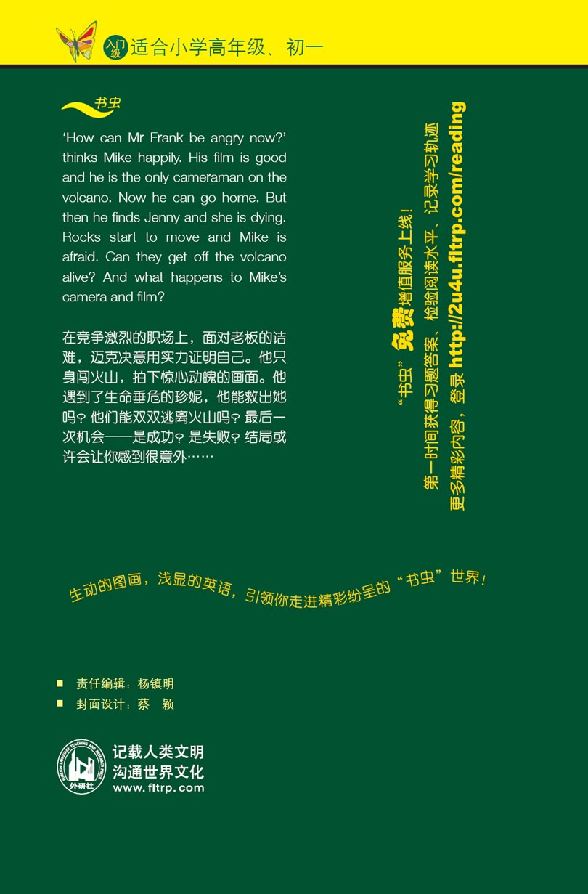